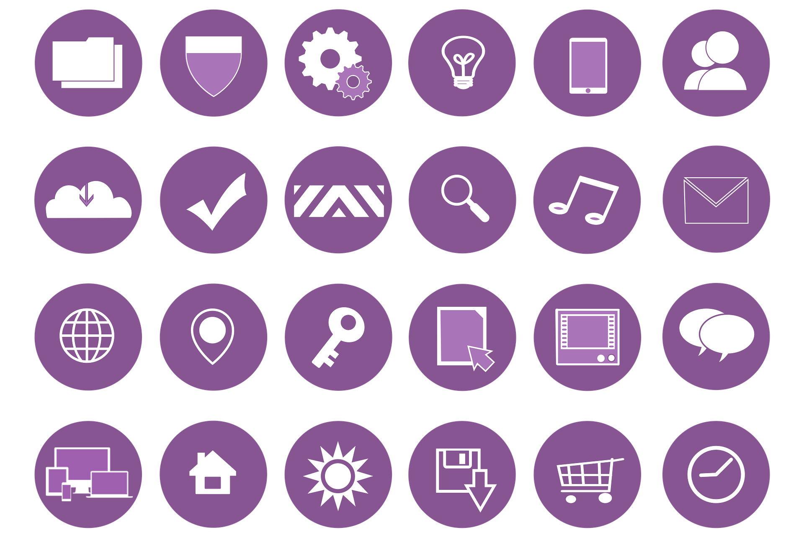

Иллюстративный веб-дизайн
Иллюстрация — чрезвычайно полезный инструмент, который может найти множество необычных применений в дизайне. А что касается веб-дизайна, вы можете найти исключительно широкий спектр реализаций.
ПодробнееМультипликационные рисунки и иллюстрации действительно могут воплотить в жизнь веб-дизайн. По определению, рисование является творческой деятельностью, и включение его в дизайн веб-сайта является одним из самых изобретательных способов отображения информации в Интернете. В 2016 году иллюстрация превратилась в основную часть веб-дизайна благодаря своим забавным и заманчивым элементам, таким как значки.
Иллюстрации вдыхают жизнь в стандартную веб-страницу, которая просто содержит интерактивные элементы и текстовое содержимое. Будь то стандартные иллюстрации, рисунки от руки, эскизы или даже живописные изображения — иллюстрации служат для разрушения монотонности контента, выделяя некоторые из наиболее важных аспектов с помощью визуальных элементов. Сегодня в веб-дизайне широко используются графические и стоковые иллюстрации, учитывая временные и денежные ограничения, связанные с регулярным обновлением содержимого страницы веб-сайта. Тем не менее, есть немало эстетических энтузиастов, которые делают все возможное, чтобы создать или заказать иллюстрации и нарисованные от руки эскизы для украшения своих сайтов.
Независимо от принятой методики важно разграничить иллюстрации от интерактивных элементов на экране, таких как ссылки, командные кнопки и другие элементы, которые побуждают пользователя действовать, чтобы представить четкое изображение. Визуальная среда имеет больший охват по сравнению с другими средствами коммуникации. Иллюстрации не только повышают эстетическую привлекательность веб-страницы, но и производят неизгладимое впечатление на посетителей!
Принципы использования иллюстративного веб-дизайна
Иллюстрации персонажей. Иллюстрации персонажей служат для добавления забавного или юмористического взгляда в передаваемое сообщение. Серьезное послание выдается в более легком ключе, но при этом подчеркивается важность содержания. Логотипы, которые представляют конкретные бренды, продукты или деловые предложения, часто добавляют индивидуальный подход к сообщению, независимо от их использования. В дополнение к тому, что логотипы видны на главной странице сайта, они, по сути, являются частью рекламных баннеров, мгновенно соединяющих зрителей с соответствующим брендом. Наряду с этим, логотипы должны быть уникальными, нестандартными иллюстрациями, в значительной степени совпадающими со стилем бренда.
Тематические иллюстрации. Тематические иллюстрации влияют на весь аспект представления веб-страницы — макет, элементы страницы, контент все идут рука об руку, чтобы сосредоточиться на конкретной теме. Эти иллюстрации, часто представленные в виде фона веб-страницы, на самом деле подчеркивают цель веб-сайта благодаря своей визуальной привлекательности и внешнему виду. Они либо автономны, либо смешаны с другими элементами веб-страницы, чтобы сообщить посетителю предполагаемое сообщение.
Случайные иллюстрации. В отличие от тематических иллюстраций, случайные просто добавляют эстетическую привлекательность веб-сайта, включая практически любой дизайн, который хорошо сочетается с целями сайта и его содержанием. Геометрические или цветочные узоры, текстурированный фон, прозрачный коллаж цветов, любой интересный элемент, который добавляет уникальность и неповторимость сайту, можно рассматривать как случайные иллюстрации.
Текст от руки. Очень похожий на наброски от руки, рукописный текст имеет свою привлекательность и служит для привлечения внимания посетителей к написанному от руки сообщению.
Инфографика. Инфографика эффективно объединяет изображения с соответствующей информацией, представленной рядом, что облегчает читателю соотносить сообщения с изображениями, чтобы понять полную картину. Инфографика сегодня все чаще используется для передачи сложных сообщений в простом, но эффективном формате. Это, безусловно, отличная альтернатива чтению блоков бегущего текста. Расширяя ту же концепцию, удачное сочетание иллюстраций и информации на домашней странице веб-сайта — удобный способ общения с пользователем.